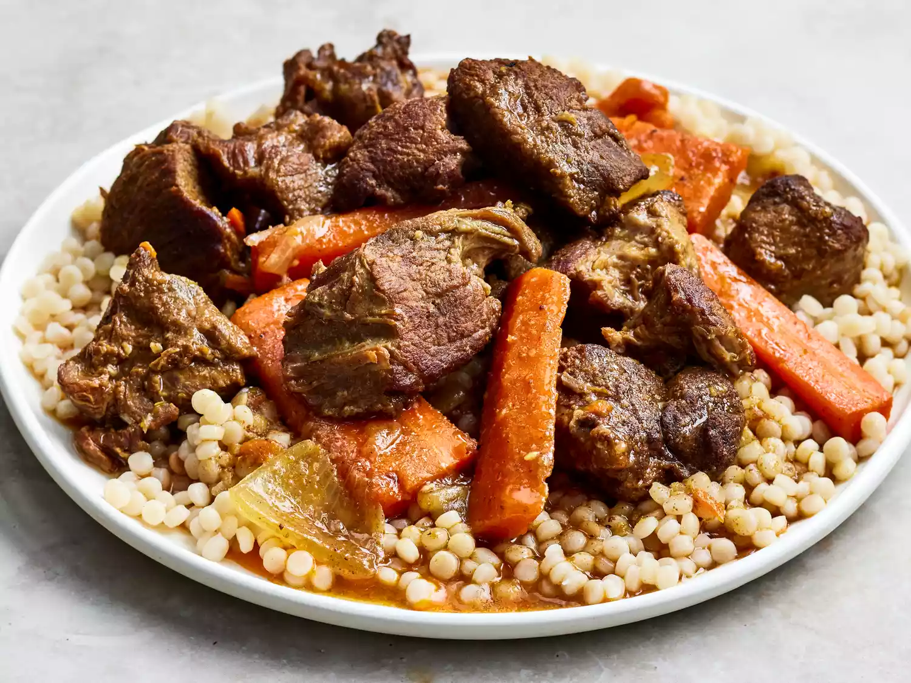

Home
Lamb Tagine

Moroccan lamb tagine recipe
When I first made this Moroccan lamb tagine, I left the kitchen window open. The smell attracted several neighbors and my
husband who came in and said that it smelled so good that he hoped it was coming from our house and not from someone else's!
If you don't have a tagine, you can use a heavy-bottomed pot.
Ingredients:
- 2 pounds lamb meat, cut into 1 ½ inch cubes
- olive oil, paprika, ground cinnamon and salt
- 2 medium onions, cut into 1-inch cubes
- 5 carrots, peeled, cut into fourths, then sliced lengthwise into thin strips
- 1 tablespoon sun-dried tomato paste
- 1 (14.5 ounce) can homemade chicken broth or low-sodium canned broth
- 1 lemon, zested
- 3 cloves garlic, minced
- ½ teaspoon ground cumin
- 1 pinch saffron
Steps:
-
Place lamb and 2 tablespoons olive oil in a large bowl and toss to coat; set aside.
-
Mix paprika, cinnamon, salt, garlic powder, coriander, cumin, cardamom, ginger, turmeric, cayenne, cloves, and saffron together
in a large resealable bag. Add lamb to the bag and toss to coat well. Refrigerate for at least 8 hours, preferably overnight.
-
Heat remaining 1 tablespoon olive oil in a large, heavy-bottomed pot over medium-high heat. Add 1/3 of the lamb and brown well,
5 to 7 minutes. Remove to a plate and repeat to cook remaining two batches of lamb.
-
Add onions and carrots to the pot and cook for 5 minutes. Stir in garlic and ginger; continue cooking for an additional 5 minutes.
Return lamb to the pot and stir in lemon zest, chicken broth, tomato paste, and honey. Bring to a boil, then reduce heat to low.
Cover and simmer, stirring occasionally, until meat is tender, 1 ½ to 2 hours.
-
If the consistency of tagine is too thin, you may thicken it with cornstarch and water slurry during the last 5 minutes.
-
Serve over couscous.